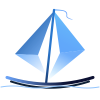

Skip to content
Dev Voyage
搜索文档
K
Main Navigation
首页
全栈教程
基础教程
学长的项目
推送
外观
Dev Voyage
CIC 计算机信息交流协会
计算机开发技能教程 · 项目实战 · 社区互助
浏览全栈课程 →
学习基础教程 →
查看项目案例 →
Github 仓库 →

🚀
实践驱动的课程
从零搭建全栈项目，覆盖前端、后端与部署，学以致用。
🧭
清晰的路线图
按阶段排列的学习计划，让进度可控，目标更明确。
🛠️
实用工具与模板
提供常用脚手架、配置与最佳实践，提升开发效率。
最新文章
FullStack 课程总览
入门 → 实战
学习要点集合
核心概念与命令行实践
项目集锦
精选项目与演示
0%